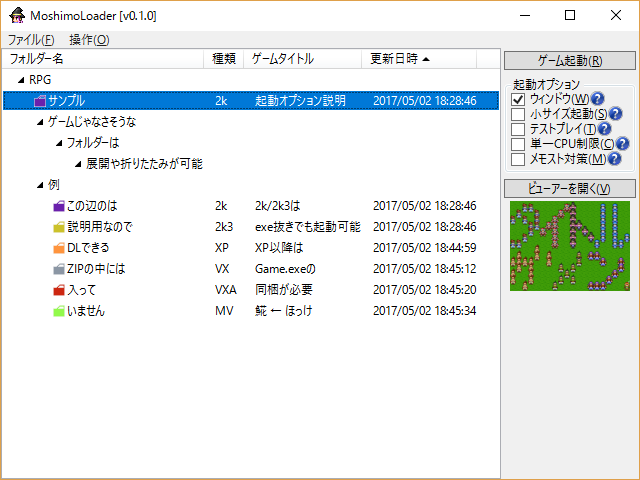

| No.44 もしも俺々仕様のRPGツクールローダーがあったら | |
 | |
| 【作者名】C#大好き丸 | |
| 【使用ツール】2k～MV | |
| 【ジャンル】ツール | |
| 【配信/投稿】o/o | |
| 【作者コメント】 readme.txtの最初の方を抜粋 # MoshimoLoader ～もしも俺々仕様のRPGツクールローダーがあったら～ ## 注意点 * Microsoft .NET Framework 4.6.2以上がインストールされていないと動きません。 * zipからの直接起動は出来ません。ドラッグ&ドロップされたzipを展開する機能はあります。 * フォルダーの複数選択は出来ません。まとめて移動したい場合はexplorerからどうぞ。 * ウディタ製作品は対応していません。 * MV製作品はexe形式のみ対応しています。 ## 特徴 * 2k～MV作品を認識、タイトル画像をサムネイル表示可能。 * 2k/2k3のバグを回避する起動オプションを用意。 * フォルダーコピー時などの進行状態表示にWindows標準ダイアログを使用。 * フォルダーコピー時などで名前が被らないよう自動変更する機能を搭載。 * ファルダー削除時にごみ箱に移動するか完全に削除するかを設定可能。 * ホットキーやタブオーダーを設定しているのでキーボード使いにも安心。 * 作者の趣味によりインターネットショートカットファイルもビューアーで表示可能。 | |
| 【管理人コメント】 これは凄い | |
| ダウンロード / 感想掲示板 | |
| 前の作品へ / 次の作品へ | |